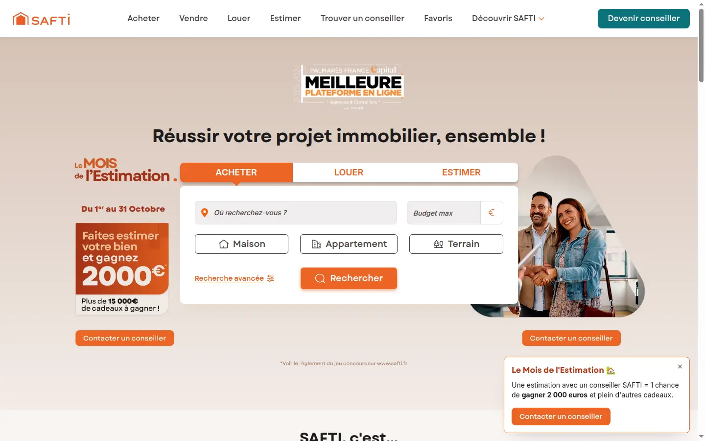
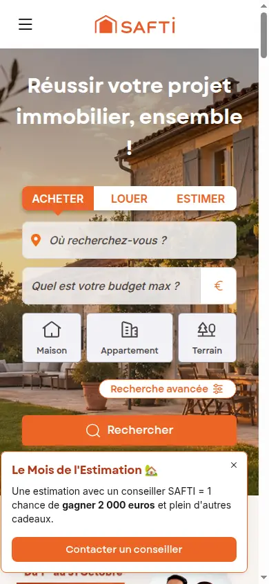

Essais / 01
SAFTI.fr : refondre un site d'annonces sans perdre son trafic
Un site immobilier dont l'essentiel du trafic vient du référencement naturel, à faire évoluer vers une architecture moderne sans casser ce qui le fait vivre.
- Période
- 2022-2024
- Rôle
- Refonte d'architecture, SEO technique
- Stack
- Next.js, TypeScript, Jest
- En ligne
- safti.fr

Contexte
Un site d'annonces vit de ses pages indexées : listes par ville, fiches de biens, pages de conseillers. Chaque changement d'architecture touche des milliers d'URL que les moteurs de recherche connaissent déjà.
démo Le texte détaillé du contexte (volumétrie, équipe, calendrier) reste à rédiger par Johan. Ce paragraphe sert à juger la mise en page d'un texte long, pas son contenu.
Contraintes
Équipe agile, mise en production continue, pages à fort enjeu SEO.
- Migrer page par page, en faisant cohabiter les deux routeurs de Next.js.
- Conserver les URL, les balises canoniques et les données structurées.
- Garder un niveau de couverture de tests vérifié à chaque merge request.
à valider Liste reconstituée à partir du code actuel du site, à confirmer par Johan.


Décisions
Migration progressive vers l'App Router, optimisation technique du SEO et suivi des performances, tests unitaires avec objectifs de couverture.
démo Ici viendrait le récit d'une décision précise, avec ses alternatives et la raison du choix. Un spécimen peut s'insérer à cet endroit quand une démonstration vaut mieux qu'une description.
Mesures
Une fonctionnalité proposée et développée a accompagné le passage de la note Trustpilot de 2,1 à 4,8. à sourcer
Les mesures de performance avant et après la migration (Core Web Vitals issus des données réelles) restent à collecter. à fournir